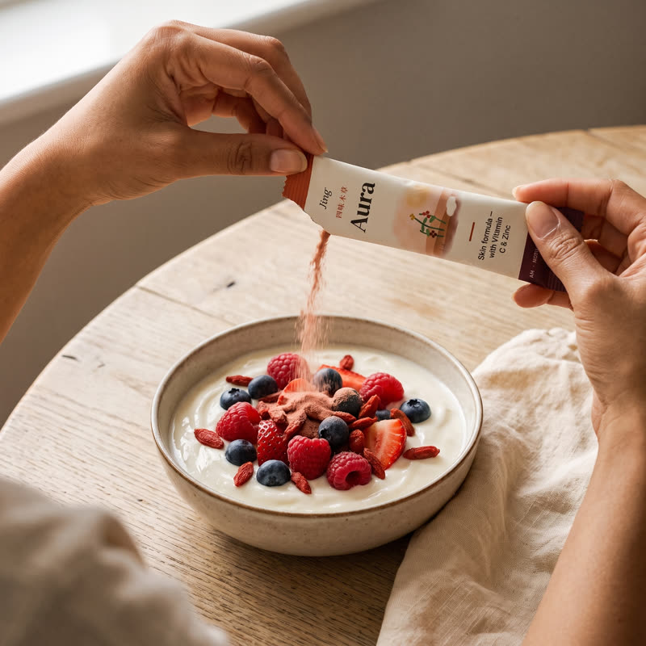
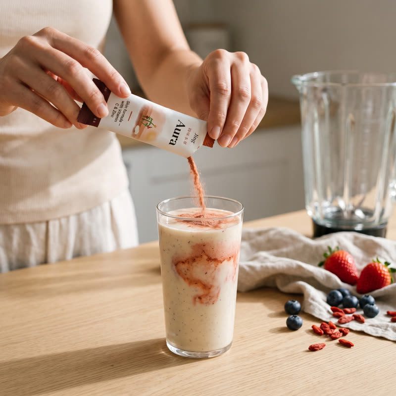
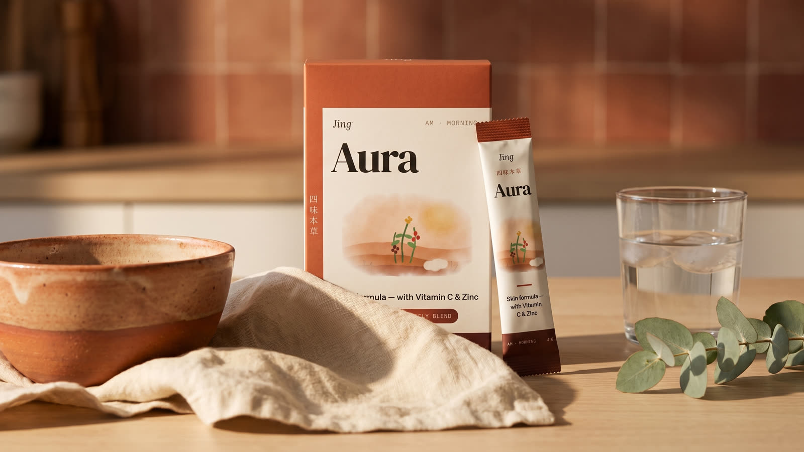
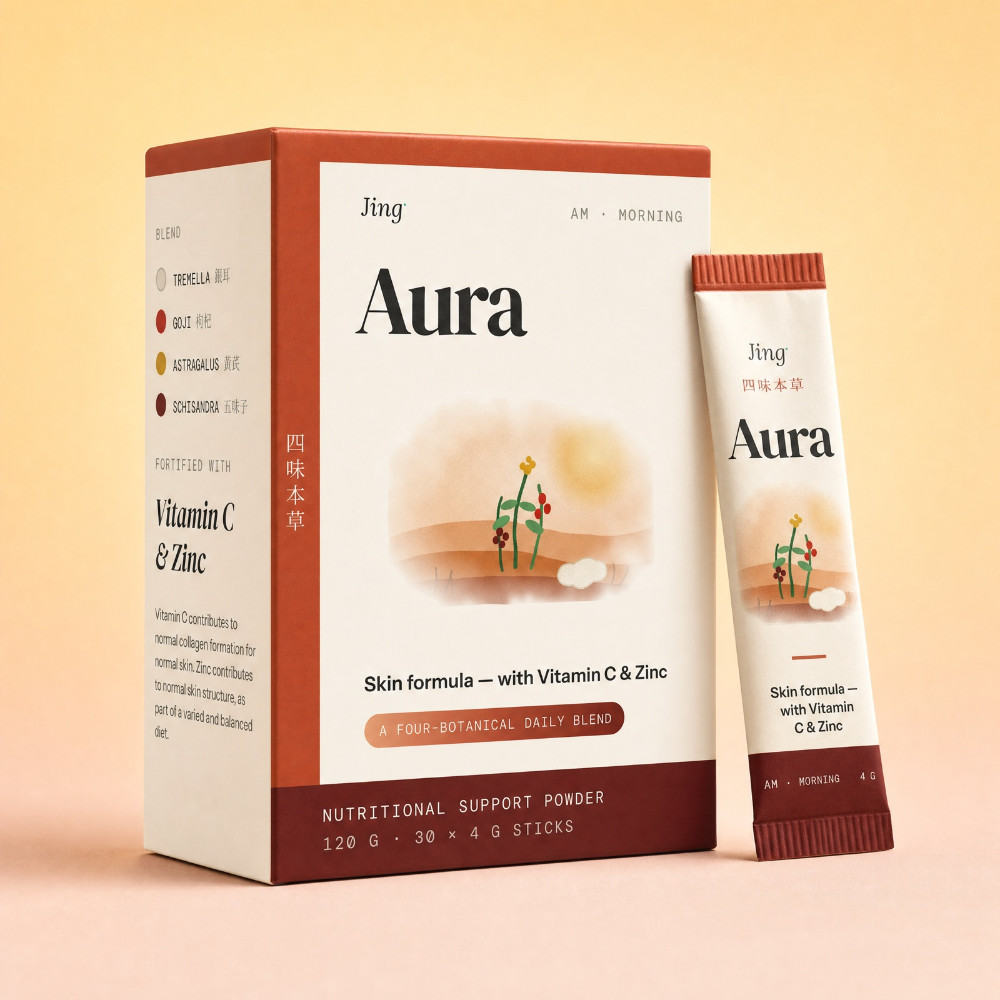

Vitamin C contributes to normal collagen formation for the normal function of skin.
EU Register · 80 mg per stick · 100% NRV

Tremella, goji, astragalus and schisandra — fortified with Vitamin C, which contributes to normal collagen formation, and Zinc, which contributes to the maintenance of normal skin. One stick. 4 g. Every morning.
HK$588
100% NRV Vitamin C · 100% NRV Zinc per serve. No fillers, flavourings or sweeteners.
The Vitamin C and Zinc statements above are authorised nutrient claims. The botanicals are included for their traditional standing in Chinese medicine and their active research record — hydration, antioxidant capacity, resilience and barrier function are areas of study, not promises. The full evidence ladder, with citations, lives on our Science page.
Tear one stick (4 g) into food or a drink, each morning — congee, yoghurt, smoothies or warm water. One box holds 30 sticks: one full skin-renewal cycle and a couple of days to spare. Store below 25 °C away from sunlight.
Everything below sits on a rung of our evidence ladder — and we tell you which rung it sits on.
Vitamin C contributes to normal collagen formation for the normal function of skin.
EU Register · 80 mg per stick · 100% NRV
Zinc contributes to the maintenance of normal skin.
EU Register · 10 mg per stick · 100% NRV
Four botanicals with deep documented use in Chinese medicine — named, and weighed to the tenth of a gram.
Tremella · Goji · Astragalus · Schisandra
No fillers, flavourings, sweeteners or proprietary blends. The whole 4 g is accounted for below.
120 g · 30 × 4 g sticks · one 4-week cycle
One 4 g stick. Six things in it. Nothing hidden behind the words “proprietary blend”.
| Ingredient | Form | Per stick |
|---|---|---|
| Tremella 銀耳 | Fruiting body extract | 1.6 g |
| Goji 枸杞 | Berry powder | 1.2 g |
| Astragalus 黃芪 | Root extract | 0.7 g |
| Schisandra 五味子 | Berry extract | 0.4 g |
| Vitamin C | Ascorbic acid · 100% NRV | 80 mg |
| Zinc | Zinc citrate · 100% NRV | 10 mg |
Amounts are per 4 g stick. NRV = Nutrient Reference Value. Food supplements are not a substitute for a varied and balanced diet.
Botanical extracts are measured in grams, not milligrams. Four grams of blend is roughly eight capsules’ worth — a stick carries the dose the formula actually calls for.
Capsules need flow agents and fillers to run on a machine. A stick of loose powder doesn’t — so the ingredient list stays as short as the one above.
Deliberately unflavoured and unsweetened, so it stirs into congee, yoghurt, a smoothie or warm water without turning breakfast into a supplement.
Every claim on this page sits on one of these rungs, and we label which. If we can’t cite it, we won’t claim it.
Stated as plain fact. The Vitamin C and Zinc claims are drawn verbatim from the EU Register. These are the only efficacy claims we make.
Described with its limits — sample size, dose, quality — and whether the dose matches ours.
Labelled “studied for”, never “proven to”. Cell and animal work is genuinely interesting and genuinely not proof of a benefit.
Named as heritage, not as evidence. Centuries of use tell you what people have valued, not what a trial has shown.
Tear, stir, carry on. It takes about four weeks — one full skin cycle — before it’s worth forming an opinion.



The line between the two is the whole product.
sticks per box
per stick · one morning
weeks · one skin cycle
fillers or sweeteners
Store below 25 °C, away from direct sunlight. Best before is printed on the base of each box.
Gently earthy with a faint berry note from schisandra — deliberately unflavoured and unsweetened so it disappears into congee, yoghurt, smoothies or warm water.
Skin renews on a cycle of roughly four weeks, so we suggest a minimum of one full cycle — most of our community commits to eight to twelve weeks. Anyone promising overnight transformation from a supplement isn’t being honest with you.
The two claims on our label — Vitamin C for normal collagen formation, Zinc for normal skin — are authorised nutrient claims in the EU register. The botanicals are presented as what they are: ingredients with deep traditional use and active research. Read our Science page for the full evidence ladder and citations.
Please consult your doctor or a registered Chinese medicine practitioner before use if you are pregnant, breastfeeding, or taking medication. Food supplements are not a substitute for a varied diet, and honest brands say so.
A fresh box of 30 sticks arrives every four weeks — one full skin cycle — with free shipping, at HK$498 instead of HK$588. Pause, skip or cancel anytime from your account.

120 g · 30 × 4 g sticks · from HK$498 on subscription